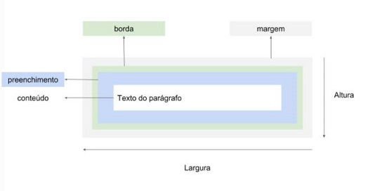
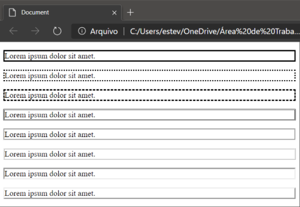
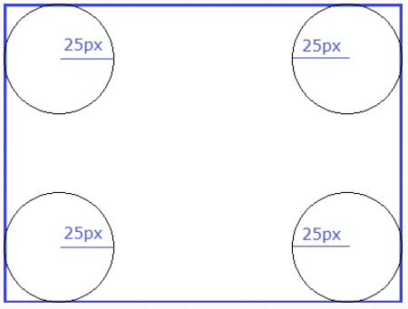
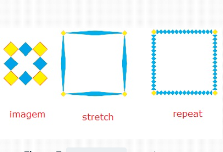
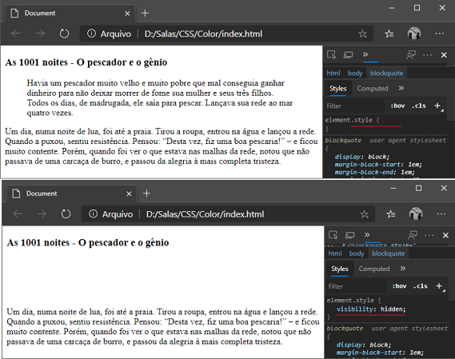

O motor de renderização do navegador representa cada elemento como uma caixa retangular. O que determinam o espaço que o mesmo ocupa na tela do navegador é o conteúdo somado a margem, borda e preenchimento do elemento (altura, largura, preenchimento e borda).

Fonte: https://www.devmedia.com.br/css-box-model/41237
A forma como o cálculo da box model é calculada depende da propriedade box-sizing. Podemos considerar incorporar os valores de border e padding nas dimensões originais do elemento ou deixar eles somando.
O valor padrão é o content-box. Nele é levados em consideração apenas o conteúdo do elemento.
Outro valor possível é o border-box, altera a forma como o Box Model é calculado, incorporando os valores de padding e border à largura do box criado pelo elemento HTML.
As unidades de medidas mais usadas são:
Px: A unidades de medida do CSS mais comum é a pixels (px).
blockquote {
height: 400px;
width: 200px;
}
%: Trabalha com percentual de valor atual do documento.
blockquote {
width: 50%;
height: 40%;
}
pt: Um ponto é uma unidade de medida utilizada para a vida real (1pt=1 polegada).
blockquote {
width: 50pt;
height: 80pt;
}
em: 1em é igual ao tamanho atual do elemento.
blockquote {
width: 50em;
height: 10em;
}
O controle das áreas que compõem um box são:
Margin: Essa propriedade controla a área de margem de um elemento, isso influencia no espaçamento entre o elemento e os demais elementos ao seu redor.
blockquote {
margin-top: 16px;
margin-bottom: 16px;
margin-left: 40px;
margin-right: 40px;
margin-left: 0; */remove a margem.*/
margin: 16px 40px 16px 40px; /*margin: top right bottom left*/
}
Padding: É a propriedade que define uma a distância entre o conteúdo de um elemento e suas bordas. É possível usar apenas o padding ou, em situações que demandem um maior controle, usar as variações padding-top, padding-right, padding-bottom, padding-left. Podemos também usar a forma resumida Shorthand padding: top right bottom left.
blockquote {
padding-top: 10px;
padding-bottom: 20px;
padding-left: 50px;
padding-right: 25px;
padding: 10px 25px 20px 50px; /*padding: top right bottom left*/
}
Border: Toda a caixa possui uma borda (Figura 1) que é invisível por padrão. Ela se divide em três sub-propriedades que são:
border-width: Controla a espessura da borda. Pode receber valores numéricos (px) ou os valores especiais thin (o valor da borda se torna igual a 1px para todos os lados), medium (o valor da borda se torna igual a 3px para todos os lados) e thick (o valor da borda se torna igual a 5px para todos os lados).
border-style: Controla o estilo da borda. Podemos usar 8 estilos de bordas: solid, dotted, dashed, double, groove, ridge, inset, outset.

Fonte: https://www.devmedia.com.br/view/viewaula.php?idcomp=40860
border-color: Controla a cor da borda e pode ser informada utilizando uma das formas de se criar cores do CSS.
CSS Border: Propriedades
border-radius: Usada para criar cantos arredondados nas bordas de acordo com o valor fornecido (valor do raio). É possível definir um valor único para todos os vértices ou trabalhar neles de forma individual (Superior esquerdo, Superior direito, Inferior direito, Inferior esquerdo).

Fonte: https://www.devmedia.com.br/css3-border-trabalhando-com-bordas-em-css3/28923
#div1{
border:solid 1px #000;
border-radius:0px 20px 0px 20px;
}
border-image: Permite definir uma imagem para ser usada no preenchimento da borda de um elemento. Não é suportada pelo IE e requer configurações adicionais para diferentes browsers.

Fonte: https://www.devmedia.com.br/css3-border-trabalhando-com-bordas-em-css3/28923
visibility: Visibility permite exibir/ocultar um elemento em uma página, mas sempre ocupa o lugar onde ele está no layout.
Pode assumir dois valores visible
(Valor padrão. O elemento fica visível na página) e hidden (O elemento se torna invisível, mas continua ocupando o espaço na página.)

Fonte: https://www.devmedia.com.br/view/viewaula.php?idcomp=40866
display: Display permite adicionar ou remover um elemento do layout, tornando ele visível ou não.Para remover completamente um elemento do layout, como se ele não estivesse na página, usamos a propriedade display com o valor none. O display também pode assumir os valores inline (O elemento não inicia em uma nova linha e ocupa apenas o espaço necessário para apresentar o seu conteúdo) e block (O elemento inicia em uma nova linha e vai até o final dela.)
Background
Nos permite alterar o plano de fundo das nossas páginas htmls e seus elementos (https://www.devmedia.com.br/css-background/38313).
background-color: propriedade usada para alterar a cor do plano de fundo.
background-color: #000;
background-image: propriedade usada para inserir imagens como plano de fundo. Usando em conjunto a função url(), na qual passamos como parâmetro o caminho da imagem a ser inserida.
background-image: url("pasta/Imagem.jpg");
background-repeat: Por padrão a imagem é inserida no canto superior esquerdo. Usamos esta propriedade para definir a maneira como a imagem será repetida no elemento. repeat-y, repeat-x, no-repeat, repeat.
background-repeat: no-repeat;
background-position: propriedade usada para definir a posição na qual a imagem será inserida. Essa posição pode ser especificada utilizando uma combinação de valores, sendo o primeiro a posição horizontal (right, center e left) e o segundo a posição vertical (top, center e bottom). Para uma maior precisão, podemos usar valores de medidas para posicionar as imagens também.
background-position: right top;
background-position: 30px 60px; /* 30px à direita e 60px abaixo */
background-attachment: propriedade usada para definir o que acontecerá com a imagem de fundo quando acontecer barra de rolagem, se ela ficará fixa, se ela se moverá junto com o movimento de scroll, entre outras opções.
scroll: Valor padrão. Ao rolar a página a imagem também irá rolar.
fixed: A imagem não se movimenta. Dá a impressão de que o conteúdo está deslizando sobre o fundo.
local: imagem de fundo de um documento interno se movimenta junto com o fundo do documento principal
inherit: Recebe, por herança, a mesma configuração do elemento pai.
initial: Indica à propriedade que o valor padrão deve ser utilizado.
background-attachment: fixed;
background múltiplo: Podemos usar diversas imagens como plano de fundo. Basta usar a propriedade background-image e incluir, separadas por vírgula, as URLs de cada imagem.
background-size: Propriedade usada para especificar o tamanho da imagem de fundo. Podemos usar diversos tipos de medidas ou os valores pré-definidos abaixo:
cover: Amplia a imagem até o ponto que preencha toda a área da página ou elemento.
contain: Amplia a imagem ao maior tamanho possível respeitando a área visível da página ou elemento.
inherit: Herda a mesma configuração definida no elemento pai.
initial: Utiliza o valor padrão da propriedade.
background-size: 80px 60px; /* 80 pixels de largura e 60 pixels de altura */
background-size: 300px; /* 300 pixels de largura e altura automática */
background-size: 50%;
background-size: cover;
background-origin: Propriedade usada para configurar o ponto de inserção em relação aos elementos do documento. Pode iniciar junto ao padding (padding-box), junto à borda (border-box) ou junto ao conteúdo (content-box).
background-origin: padding-box;
background-clip: propriedade usada para selecionar a área do background que será pintada. Só a borda (border-box), o padding (padding-box) ou a área do conteúdo (content-box).
background-clip: border-box;
background-blend-mode: Propriedade usada para atribuir efeitos pré-definidos às imagens e cores de fundo, dando a elas mais ou menos luminosidade, saturação, brilho, entre outras opções.
Opacity
Essa propriedade nos permite variar a opacidade (transparência) de um elemento. O valor varia de 0 (totalmente transparente) a 1 (totalmente opaco).
img { opacity : 0.5 }
Sombras
Propriedades que permitem aplicar efeito de sombreamento em um texto ou outro elemento de uma página web.
text-shadow
box-shadow
Ambas as propriedades, text-shadow e box-shadow, podem ser configuradas de acordo com a necessidade, mas o mais comum (completo) é atribuir valores para o deslocamento horizontal, vertical, blur (borrado/espalhamento) e a cor da sombra.
div { width: 100px;
height: 100px;
border:1px solid black;
float: left;
margin-right: 100px;
box-shadow: 20px 20px } /*text-shadow: X Y; box-shadow: X Y;*/
box-shadow: 20px 20px 10px } /*text-shadow: X Y Blur; box-shadow: X Y Blur;*/
box-shadow: 20px 20px 10px blue }/*text-shadow: X Y Blur Cor; box-shadow: X Y Blur Cor;*/
 Home
Home